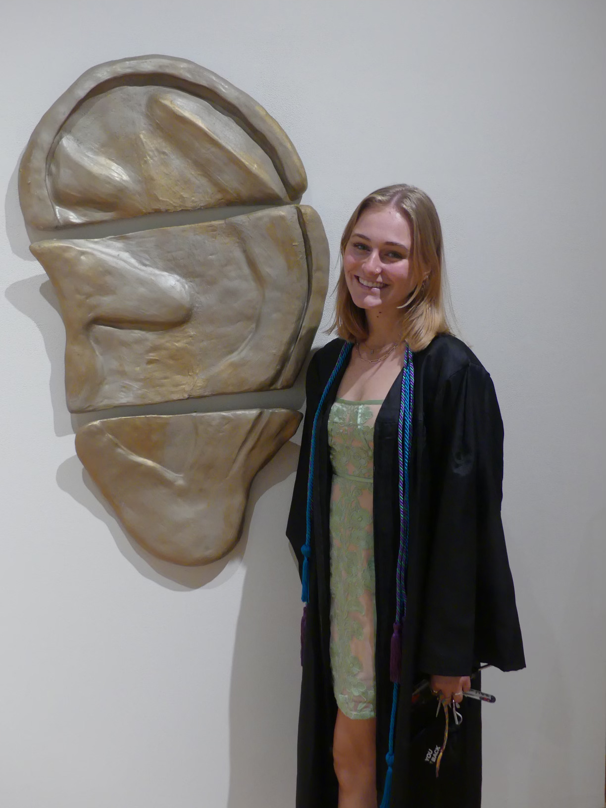

About Me
Hi, I’m Avery (she/her)! I’m from Cleveland, Ohio, and I am in my second year as an art teacher for 3rd-6th grade students at Malabar Intermediate School in Mansfield, Ohio. Beginning in 2018, I attended Ohio Wesleyan University and graduated in 2021 with a degree in Art Education (B.F.A.). For reference, the Art Education program at OWU is for students pursuing K-12 certification. Students enroll as B.F.A. majors with additional coursework in the education department and supervision for student teaching coordinated with both art and education professors. The combination of the B.F.A.’s extensive and thorough grounding in studio art and art history mixed with the curriculum and supervision in the education department makes graduates qualified and very competitive for teaching positions. I personally have a strong passion for art and wanted to inspire future generations to love art as well. Some of my favorite classes in high school were art classes (in particular, ceramics) and I formed a solid relationship with my art teacher at my high school. After graduating high school, I wanted to find a program that would set me up for a job that reflected my love for art, in addition to working with kids. I was very fortunate to find a job in the field that I wanted right after graduating from college; in combination with my role as an educator, I am currently enrolled in an online Master's program at The Ohio State University. This program is a part-time online program designed to fit into my schedule as a full-time educator where I can apply new and exciting concepts to my daily teaching practice. With an emphasis on social justice and contemporary arts, the curriculum aims to engage students as both artists and educators, challenging them to think more in-depth about their practice and their own students’ work. Directing your attention to the “Work” tab, please enjoy photos of some of my favorite pieces that I have completed over the years. I hope to inspire fellow artists in addition to lovers of the arts as I continue my journey as an educator and a creator!